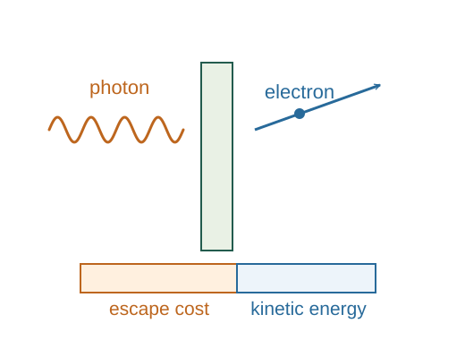

Photon energy, momentum and the photoelectric effect
The quantum relation E = hf is a physical postulate supported by experiment. Combining it with relativistic photon momentum and energy conservation predicts the photoelectric threshold.
What the symbols mean
h: Planck constant; f: light frequency; λ: vacuum wavelength; φ: material work function; Kmax: maximum emitted-electron kinetic energy.
When this applies
Single-photon photoemission from a surface with a specified work function, negligible multiphoton effects, and light propagation in vacuum for p = h/λ.
Developing the argument

State the photon energy relation
A photon of frequency f carries energy hf. This quantization is additional physical input and does not follow from classical wave interference alone.
Use the massless momentum relation
Special relativity gives E = pc for a massless particle. With c = fλ, the photon momentum magnitude is h/λ.
A closer lookWhy does massless energy equal pc? ↗Balance photoemission energy
A photon transfers its energy to an electron. The minimum energy cost φ liberates it; electrons escaping with no additional losses have the largest kinetic energy.
Find threshold and stopping potential
Emission by this mechanism needs hf ≥ φ. A retarding potential Vs that just stops the fastest electrons satisfies eVs = Kmax.
A worked example
Light at 400 nm has photon energy about 3.10 eV. For a work function 2.00 eV, the maximum electron kinetic energy is about 1.10 eV.
Derivation behind this calculation ↗A point to keep straight
Increasing intensity at fixed frequency mainly increases photon count. Below threshold, ordinary single-photon emission does not begin merely because intensity rises.
Check the assumptions and derivation ↗